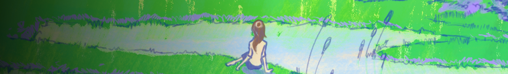

”marie” is a lofi hip/hop project that started during Winter 2025, mainly focused on sleepy beats, bossa nova, and folk beats.
I work closely with labels such as Lofi Girl, Sleep Tales, The Jazz Hop Café, and many more (20+) and I released over 60 tracks from 2025 - 2026.
I’m constantly releasing music and participating in compilations and playlists. A plan for the future is to open my own lofi record label.